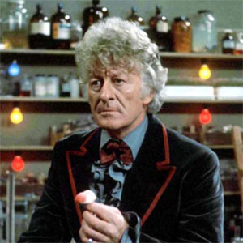

| The First Doctor |
| The Second Doctor |
| The Fourth Doctor |
| The Fifth Doctor |
| The Sixth Doctor |
| The Seventh Doctor |
| The Eighth Doctor |
| The Ninth Doctor |
| The Tenth Doctor |
| The Eleventh Doctor |
| The Twelfth Doctor |
Third Doctor
Portrayed by Jon Pertwee.
The Third Doctor is the third incarnation of the protagonist of the long-running BBC television science fiction series Doctor Who. He was portrayed by actor Jon Pertwee.
Within the series' narrative, the Doctor is a centuries-old Time Lord alien from the planet Gallifrey who travels in time and space in his TARDIS, frequently with companions. When the Doctor is critically injured, his body can regenerate; as a result, his physical appearance and personality change. Pertwee portrays the third such incarnation, a dapper man of action of stark contrast to his wily but less action-oriented predecessors. While previous Doctors' stories had all involved time and space travel, for production reasons Pertwee's stories initially depicted the Doctor stranded on Earth, where he worked as a scientific advisor to the supernatural paramilitary group UNIT. His adventures often fitted into the spy-fi genre which had been popularised by The Avengers the decade prior. Within the story, the Third Doctor came into existence as part of a punishment from his own race, the Time Lords, who forced him to regenerate and also disabled his TARDIS. Eventually, this restriction is lifted and the Third Doctor embarks on more traditional time travel and space exploration stories.
His initial companion is UNIT scientist Liz Shaw (Caroline John), who unceremoniously leaves the Doctor's company between episodes to be replaced by the more wide-eyed Jo Grant (Katy Manning), who then continues to accompany the Doctor after he regains use of his TARDIS. His final companion was intrepid journalist Sarah Jane Smith (Elisabeth Sladen), who would go on to become the Doctor's longest-serving companion.
The Third Doctor was a suave, dapper, technologically oriented, and authoritative man of action who practised Venusian Aikido (or Karate). A keen scientist, he maintained a laboratory at UNIT where he enjoyed working on gadgets in his TARDIS. In his spare time, he was fond of motoring, handing all manner of vehicles. His favourite car was a canary-yellow vintage roadster that he nicknamed "Bessie," a construct which featured such modifications as a remote control, dramatically increased speed capabilities, and inertial dampeners. He also maintained a hovercraft-like vessel that fans nicknamed the Whomobile. The First Doctor, upon meeting the Third, described him indignantly as a "dandy."